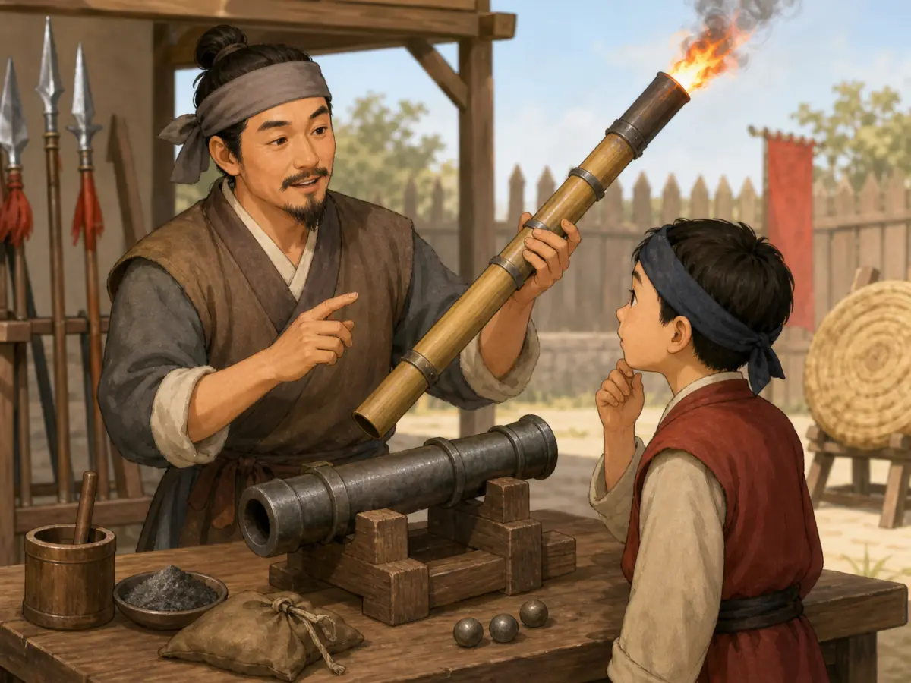

火药的发明：从炼丹炉到烟花
Gunpowder: From Alchemy to Fireworks
Page 1
一个意外的大发现
A Big Discovery by Accident

Alchemists looked for a medicine for living forever, but found a mixture that could burn and burst.
火药是古代中国四大发明之一。它的出现，很可能带着很大的偶然成分。
大约一千多年前的唐朝，有一群特别的人，叫"方士"或者"炼丹家"。他们整天在炉子前面忙活，把各种奇怪的粉末和矿石混在一起加热，想炼出一种吃了就能长生不老的仙丹。
当然，没有人真把长生不老药炼出来。但他们也不是白忙活。在一次次试验里，他们碰到了不少重要的化学现象。后来，炼丹家们慢慢发现，硫磺、木炭、硝石这类材料混在一起时，遇火会剧烈燃烧，甚至爆开。具体是谁先碰到这件事，我们今天已经说不清了，但火药的雏形，大概就是在这样的试配和失手里一点点露出来的。
Gunpowder is one of the Four Great Inventions of ancient China. Its discovery probably happened partly by accident.
More than a thousand years ago, in the Tang dynasty, some people were called fangshi, or alchemists. They worked in front of hot furnaces. They mixed strange powders and minerals. They heated them again and again. They hoped to make a magic medicine that could help people live forever.
Of course, no one really made a medicine for living forever. But their work was not wasted.
In one test after another, they noticed important changes. Over time, alchemists found that materials like sulfur, charcoal, and saltpeter could burn fiercely, or even burst, when mixed together and touched by fire.
We do not know exactly who first noticed this. But early gunpowder probably appeared little by little through testing, mistakes, and surprise.
Page 2
为什么叫"火药"？
Why Is It Called "Fire Medicine"?

It was found while people worked with medicines, so the name kept the word "medicine."
"火药"这个名字很直白。"火"是火，"药"是药。
它本来是炼丹家在"药"里面发现的。硫磺、硝石在古代都被当作药材来用，它们混在一起，居然能烧能炸，炼丹家们就把它叫作"火药" - 会着火的药。
后来有些炼丹家觉得这东西太危险了，警告同行不要随便乱试。唐代文献里确实留下过类似提醒，大意就是：硫磺、硝石和一些材料一起烧，容易把人烧伤。这也被很多人看作早期火药知识的重要文字线索。
The Chinese name huoyao is very direct. Huo means fire. Yao means medicine.
The name makes sense because the mixture was first noticed while alchemists were working with things used as medicines. Sulfur and saltpeter were both treated as medicinal materials in ancient times. When they were mixed and lit, they could burn or burst, so people called the result huoyao - fire medicine.
Later, some alchemists realized this stuff was dangerous. They warned others not to test it carelessly.
Some Tang dynasty writings do give warnings like this. They say that sulfur, saltpeter, and certain other materials could burn people badly when heated together. Today, many people see those warnings as important early clues in the story of gunpowder.
Page 3
从"药"变成武器
How "Medicine" Became a Weapon

Gunpowder first made fire and noise. Later it helped make fire-lances and hand cannons.
最早的火药，燃烧速度还比较慢，主要可以用来放火、放信号，或者制造很吓人的声光效果。
到了宋朝，火药的军事用途开始被大规模开发。军队里的工匠发现：如果把火药装在密封的容器里，点火以后气体出不去，就会产生爆炸。"火枪"和"突火枪"是宋代早期很有代表性的火药武器 - 在长枪上绑一个竹筒或金属筒，点火后喷出火焰和碎片，能吓退或杀伤前方敌人。
后来工匠们越做越大，造出了可以发射石弹和铁弹的"火铳"。火铳是一根粗铁管，后面留一个小孔。把火药从前面塞进铁管，再塞一颗铁弹，从后面的小孔点火，轰的一声，铁弹飞了出去。这已经是最原始的"枪"和"炮"了。
Early gunpowder did not burn as fast as later kinds. At first, it was useful for setting fires, sending signals, or making scary sounds and flashes.
By the Song dynasty, armies were using gunpowder in bigger ways. Military craftspeople learned something important: if gunpowder was packed inside a closed space and lit, the gas could not get out easily. Then it could explode.
One early weapon was the fire-lance. A bamboo or metal tube was tied to a long spear. When it was lit, flames and small pieces shot forward. It could scare or hurt enemies in front.
Later, craftspeople made bigger weapons that could shoot stone or iron balls. These were early hand cannons. A hand cannon was a thick iron tube with a small hole in the back. People packed gunpowder in from the front, added a ball, and touched fire to the back hole.
Boom. The ball flew out. The earliest forms of guns and cannons had begun.
Page 4
从带火的箭到真正的火箭
From Fire Arrows to Real Rockets

First people tied gunpowder to arrows. Later they made rockets that could fly without a bow.
后来，人们把火药用在箭上。他们把装着火药的小竹筒绑在箭杆上，再用弓把箭射出去。这就是早期的"火箭"，也就是带火飞出去的箭。它比普通的箭更吓人，因为它不只会飞，还会喷火、冒烟。
后来，人们又发现一件更妙的事：有些装着火药的竹筒，就算不绑在箭上，也可能自己往前冲。热气从后面喷出来，竹筒就被推着往前走。这样一来，弓就不是一定需要了，真正靠自己飞的火箭慢慢出现了。
再后来，工匠把这些想法做得越来越厉害。有人把很多小火箭一起装在木架里，点燃以后一起飞出去。可火药不只进了战场，也进了节日。人们把它装进纸筒里，做出烟花和爆竹，让夜空亮起来，也让庆祝更热闹。
Later, people tried using gunpowder with arrows. They tied small bamboo tubes filled with gunpowder to arrow shafts, then shot the arrows with bows. These were early fire arrows. They looked frightening because they flew with fire and smoke.
Then people noticed something even more interesting. Some gunpowder tubes did not need an arrow at all. When hot gas rushed out the back, the tube could push itself forward. That meant the bow was no longer necessary. Step by step, real rockets began to appear.
Later, craftspeople developed these ideas further. Some launchers could send many small rockets out together. But gunpowder did not stay only on the battlefield. People also packed it into paper tubes to make fireworks and firecrackers, turning the same force into light, sound, and celebration.
小结
Summary
火药大概是在炼丹实验里慢慢成形的。后来，它能喷火，能绑在箭上飞出去，也能自己变成火箭，还能变成节日夜空里的烟花。那些本来想炼仙丹的人，没有找到长生不老药，却碰到了一样真的改变世界的东西。
Gunpowder probably took shape little by little in alchemy experiments. Later it could make flames, carry fire on arrows, push rockets forward, and light up festival skies. The people who wanted a medicine for living forever never found one. But by accident, they found something that truly changed the world.